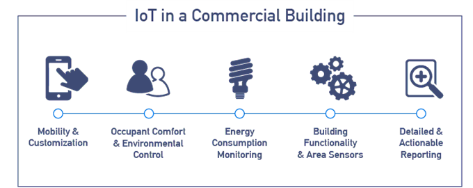
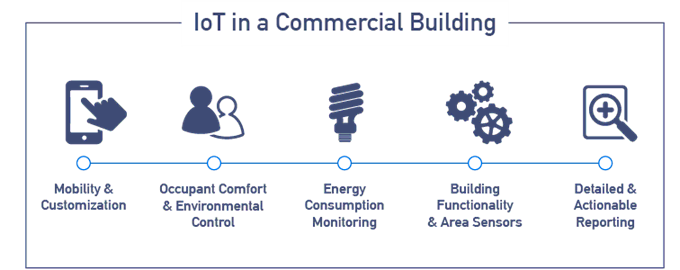
The Internet of Medical Things (also called the internet of health things) is an application of the IoT for medical and health related purposes, data collection and analysis for research, and monitoring.This 'Smart Healthcare', as it is also called, led to the creation of a digitised healthcare system, connecting available medical resources and healthcare services.
IoT devices can be used to enable remote health monitoring and emergency notification systems. These health monitoring devices can range from blood pressure and heart rate monitors to advanced devices capable of monitoring specialised implants, such as pacemakers, Fitbit electronic wristbands, or advanced hearing aids. Some hospitals have begun implementing "smart beds" that can detect when they are occupied and when a patient is attempting to get up. It can also adjust itself to ensure appropriate pressure and support is applied to the patient without the manual interaction of nurses. A 2015 Goldman Sachs report indicated that healthcare IoT devices "can save the United States more than $300 billion in annual healthcare expenditures by increasing revenue and decreasing cost."Moreover, the use of mobile devices to support medical follow-up led to the creation of 'm-health', used "to analyse, capture, transmit and store health statistics from multiple resources, including sensors and other biomedical acquisition systems".
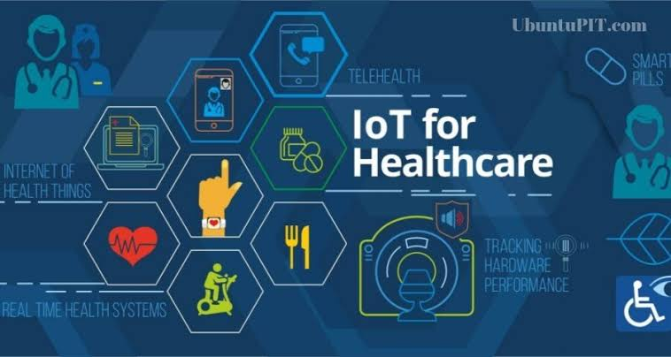 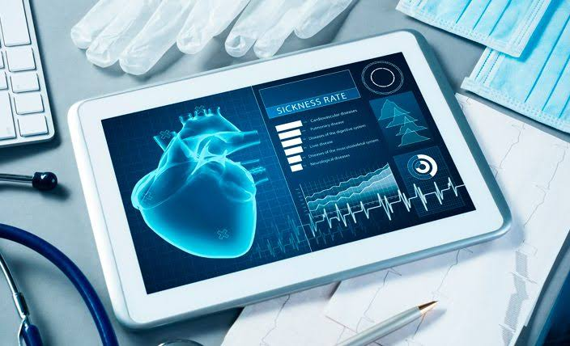 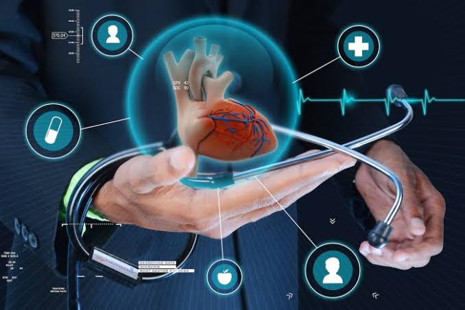 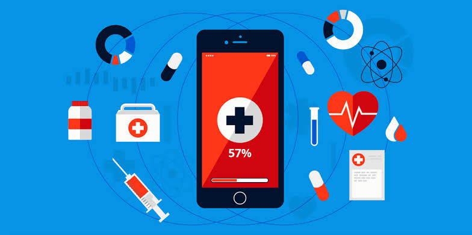The IoT can assist in the integration of communications, control, and information processing across various transportation systems. Application of the IoT extends to all aspects of transportation systems (i.e. the vehicle, the infrastructure, and the driver or user). Dynamic interaction between these components of a transport system enables inter- and intra-vehicular communication, smart traffic control, smart parking, electronic toll collection systems, logistics and fleet management, vehicle control, safety, and road assistance. In Logistics and Fleet Management, for example, an IoT platform can continuously monitor the location and conditions of cargo and assets via wireless sensors and send specific alerts when management exceptions occur (delays, damages, thefts, etc.). This can only be possible with the IoT and its seamless connectivity among devices. Sensors such as GPS, Humidity, and Temperature send data to the IoT platform and then the data is analyzed and then sent to the users. This way, users can track the real-time status of vehicles and can make appropriate decisions. If combined with Machine Learning, then it also helps in reducing traffic accidents by introducing drowsiness alerts to drivers and providing self-driven cars too.
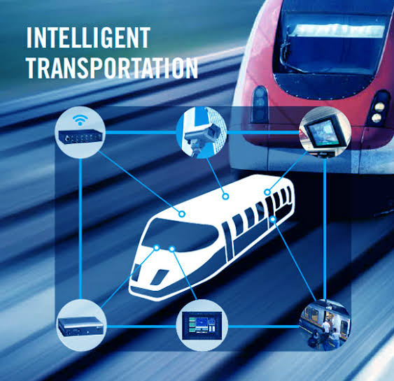 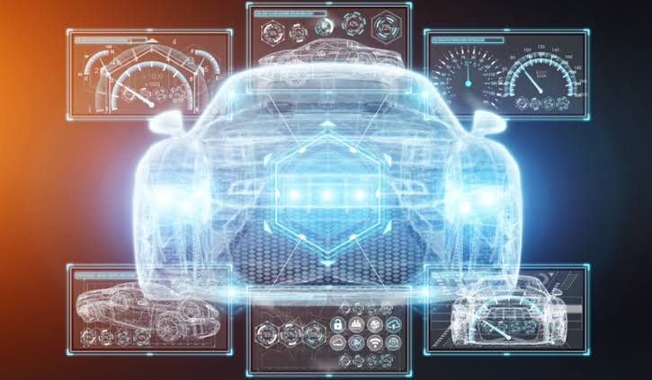 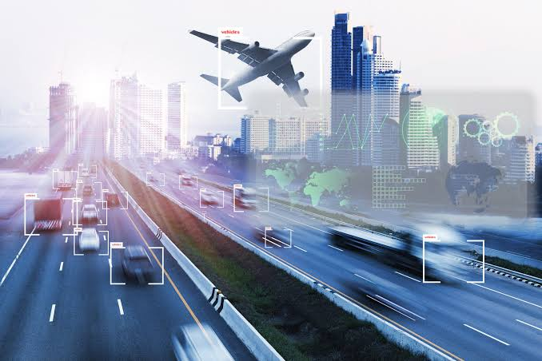 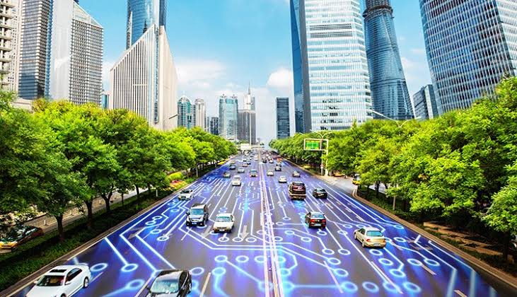In vehicular communication systems, vehicle-to-everything communication (V2X), consists of three main components: vehicle to vehicle communication (V2V), vehicle to infrastructure communication (V2I) and vehicle to pedestrian communications (V2P). V2X is the first step to autonomous driving and connected road infrastructure.
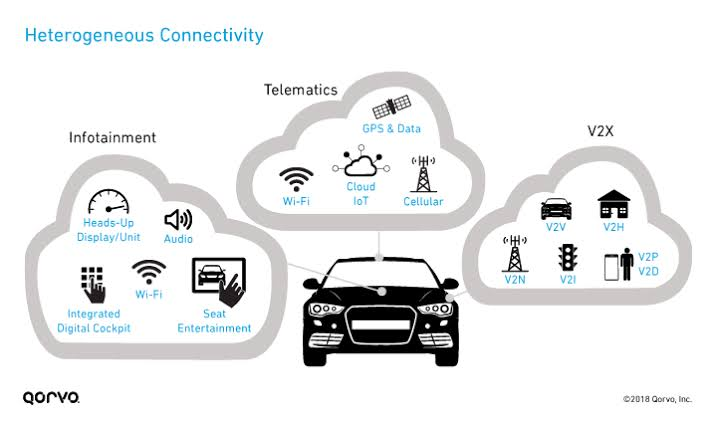 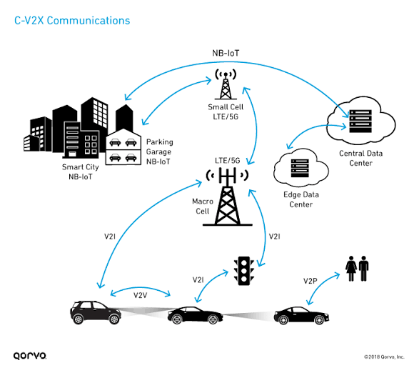IoT devices can be used to monitor and control the mechanical, electrical and electronic systems used in various types of buildings (e.g., public and private, industrial, institutions, or residential) in ../home automation and building automation systems. In this context, three main areas are being covered in literature: